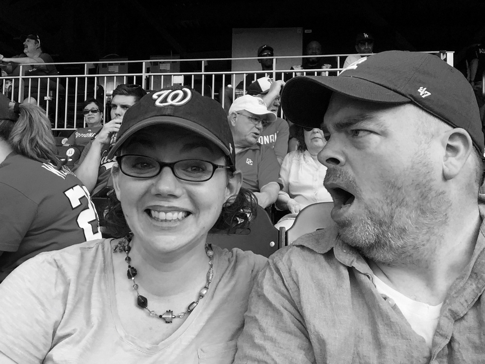
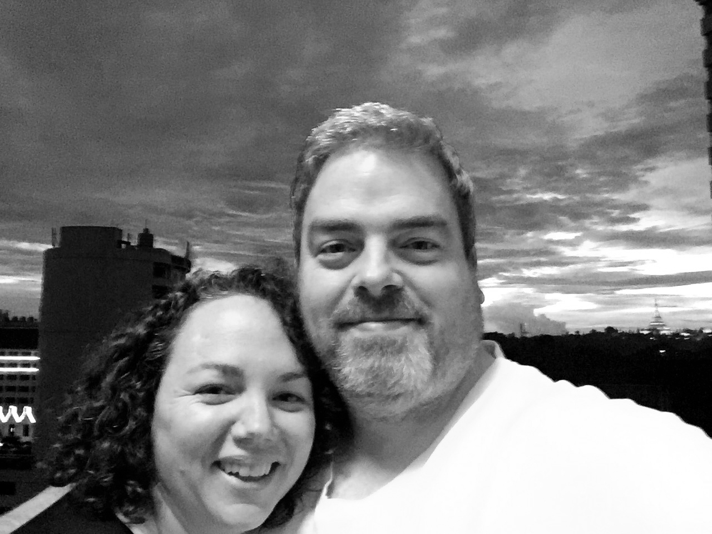

Jeanne traveled around the world and Tom traveled around the United States before they matched one another in an online app in March 2016. Two days later they met in person for the first time at a speakeasy-style bar in downtown Washington, DC.

After dating only a few months, each of them was pretty sure the other was their special someone.
That summer, after a trip to Burma, Jeanne found out that her dream assignment would be available the following year.
"It's way too soon to be talking about this, but would you be willing to move to Burma with me?" she asked.
"OK," he said.
They had a blissful few months living together on Capitol Hill, dining at many great restaurants and binge-watching many great television shows, until Jeanne had to pack up and move to Yangon in May 2017.

Tom stayed behind to finish his work at Georgetown Law Library. The months apart were made easier by FaceTime, Tom's visit to Yangon in October 2017, and Jeanne's visit home for the holidays.
In June 2018 Tom moved to Burma permanently and became what's known in the Foreign Service as a "trailing spouse." Jeanne always hoped but never believed she'd find a partner who was willing to be her kept man (and travel with her around the world). Tom always hoped to become a kept man (and travel around the world).
Neither of them really expected to have a big wedding, but they can't wait to celebrate their commitment to each other with family and friends.